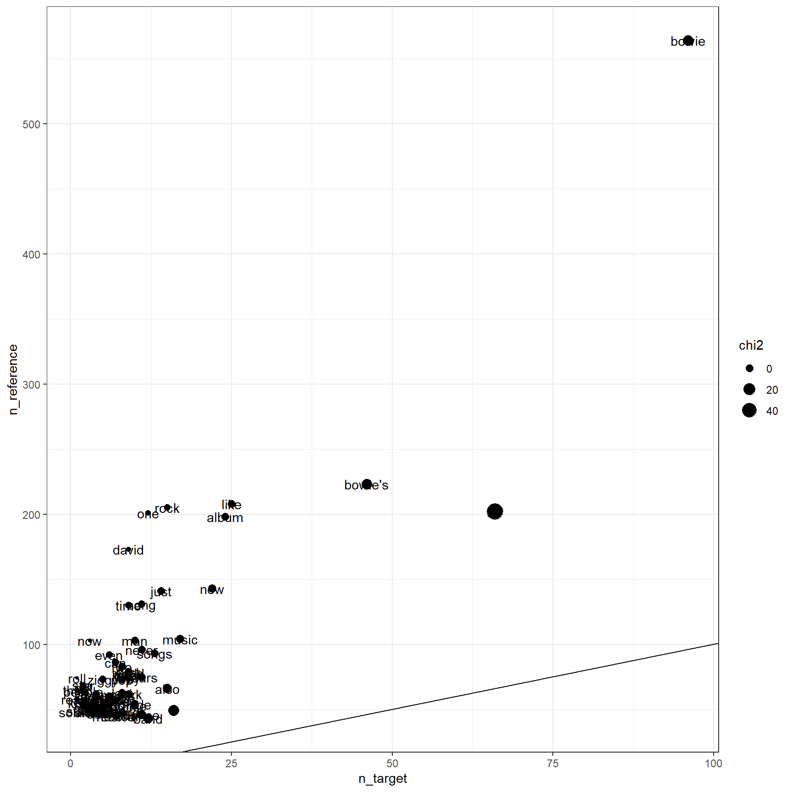

Chapitre 4 Visualiser et réduire le corpus
Maintenant que nous disposons de l’ensemble du corpus, il est intéressant, de s’en donner un aperçu général. On examine ici quelques outils :
- corpora explorer
- les fonctions keyness et kwicks
- text réduction : avec textrank
4.1 Explorer le corpus
(attention, c’est un chapitre qui doit être par la suite détaché)
Avant de procéder aux analyses du corpus, il est souvent utile de le représenter. On va utiliser le package Corpora explore à cette fin. Il permet de préparer un corpus et de le visualiser de manière interactive avec la génération d’une app shiny. Malheureusement nous ne savons pas rendre compte de la dynamique de l’outil. On peut naviguer aisément dans l’ensemble de texte.
On va utiliser une collection de données préparée avec Manel Benzarafa de l’Université Paris Nanterre, et qui comprend l’intégralité des résumés, auteurs etc.. relatifs aux articles publiés par la revue [Politiques et Management] public () PMP. Une base bibliographique intégrale composée de 1025 articles.
#install.packages("corporaexplorer")
library(corporaexplorer)
PMP <- read_csv("data/PMPLast.csv")
PMP<-PMP %>%
select(Key, Author, Title, Issue, 3, 11)
PMP<-PMP%>% rename(Text=6, Annee=5) %>%
filter(Text!="Null" & !is.na(Annee))
corpus <- prepare_data(PMP,
date_based_corpus =FALSE,
grouping_variable = "Annee", # change grouping variable
within_group_identifier = "Title",
columns_doc_info =
colnames(df)[1:4],
tile_length_range = c(2, 10),
use_matrix = FALSE
)
#explore(corpus) #on n'execute pas car diagramme interactif.Dans la photo d’écran suivante, on teste les termes " politique" et “management”. Chaque tuile ( tile) représente un des 1025 abstracts qui composent le corpus. Les couleurs correspondent à la fréquence des deux termes.

Exploration des abstracts de PMP
Un autre exemple avec David Bowie ( Nous aurons l’occasion d’exploiter ces corpus dans les chapitres suivants, alors donnons nous un second panorama de corpus). C’est un corpus constitué par Elisa Benavent pour un mémoire d’histoire contemporaine dans l’idée simple d’étudier comment la novation se définit dans le temps.
library(tidyverse)
library(shiny)
df <- read_csv("data/bowie_txt_analysis.csv")
df<-df %>% mutate(Annee=substr(date,7,8))%>%
rename(Text=texte, Data=date)%>%
filter(!is.na(Text))
library(corporaexplorer)
corpus <- prepare_data(df,
date_based_corpus =FALSE,
grouping_variable = "Annee", # change grouping variable
within_group_identifier = "titre",
columns_doc_info =
colnames(df)[2:3],
tile_length_range = c(1,4),
use_matrix = TRUE
)
#explore(corpus) #la fonction lance une app interactive4.2 Keyness index
C’est un des outils les plus basiques et fondamentaux. Il est destiné à identifier rapidement les mots clés qui distinguent une partie du corpus des autres parties.
Quanteda fournit une solution https://quanteda.io/reference/textstat_keyness.html avec quanteda statistics.
https://www.researchgate.net/publication/319208347_Keyness_analysis_Nature_metrics_and_techniques
4.2.1 quickindex
4.2.2 keyness index
df$Annee<-as.numeric(df$Annee)
df<-df %>%
mutate(group=ifelse(Annee >90,"cible","index" ))
corpus <- corpus(df, text_field = "Text")
toks <- tokens(corpus,remove_punct = TRUE, remove_numbers = TRUE)%>%
tokens_remove(pattern = stopwords("en"))
dfm<-dfm(toks)
dfm1 <- dfm_group(dfm, groups = group)
tstat <- textstat_keyness(dfm1)
foo <- tstat %>% filter(n_target+n_reference>50) %>%
as.data.frame() %>%
select(-p)
ft<-flextable(foo) %>%
theme_vanilla()%>%
add_footer_lines("La période cible se caractèrise ")
ft <- color(ft, part = "footer", color = "#666666")
ft <- set_caption(ft, caption = "Keyness index ( chi²>10")
ftfeature | chi2 | n_target | n_reference |
mr | 57.8203879574202 | 66 | 202 |
s | 13.9213230225982 | 16 | 49 |
bowie's | 12.7445135976610 | 46 | 223 |
bowie | 11.9606039983358 | 96 | 564 |
band | 7.5811263208938 | 12 | 43 |
also | 5.6229431045217 | 15 | 66 |
dance | 4.7567925590427 | 11 | 46 |
little | 1.9715065070665 | 10 | 53 |
made | 1.8234208932036 | 10 | 54 |
music | 1.6668452470286 | 17 | 104 |
new | 1.4575311561829 | 22 | 143 |
sound | 0.8747657018380 | 8 | 48 |
musical | 0.4997117169371 | 7 | 45 |
record | 0.4997117169371 | 7 | 45 |
years | 0.4984740050533 | 11 | 75 |
work | 0.3718324723558 | 9 | 62 |
songs | 0.3680569485440 | 13 | 93 |
says | 0.0943892900732 | 8 | 61 |
last | 0.0491325249929 | 8 | 63 |
albums | 0.0416623182026 | 6 | 47 |
album | 0.0288067574072 | 24 | 198 |
like | 0.0177637208327 | 25 | 208 |
good | 0.0153935078860 | 7 | 57 |
heroes | 0.0153935078860 | 7 | 57 |
way | 0.0128324517486 | 9 | 74 |
back | 0.0014211081363 | 9 | 76 |
much | 0.0000003267105 | 9 | 77 |
world | -0.0013051028845 | 9 | 78 |
never | -0.0038304124320 | 11 | 96 |
first | -0.0052427436191 | 9 | 79 |
get | -0.0137660626542 | 6 | 54 |
things | -0.0256548201674 | 6 | 55 |
pop | -0.0298275303336 | 8 | 73 |
next | -0.0600220167011 | 5 | 48 |
make | -0.0836788160042 | 5 | 49 |
guitar | -0.1329201647092 | 6 | 60 |
thing | -0.2105232261430 | 5 | 53 |
two | -0.2722477603567 | 8 | 83 |
man | -0.3150767317678 | 10 | 103 |
just | -0.3402614199582 | 14 | 141 |
aladdin | -0.4267925408287 | 4 | 48 |
since | -0.5390624224063 | 4 | 50 |
life | -0.7235219399253 | 4 | 53 |
can | -0.8581462737709 | 7 | 86 |
song | -1.1231761204971 | 11 | 131 |
love | -1.1401772678038 | 4 | 59 |
well | -1.1401772678038 | 4 | 59 |
something | -1.1439836771260 | 3 | 48 |
stardust | -1.2247681750283 | 3 | 49 |
always | -1.3680495166617 | 4 | 62 |
ziggy | -1.3706380498399 | 5 | 73 |
going | -1.3903817534440 | 3 | 51 |
title | -1.5609089530350 | 3 | 53 |
even | -1.9764494485149 | 6 | 92 |
time | -2.3693947273279 | 9 | 130 |
still | -2.8435871950116 | 2 | 54 |
know | -2.9473153354248 | 2 | 55 |
rock | -3.1393527689425 | 15 | 205 |
right | -3.1561515618603 | 2 | 57 |
people | -3.8994037554368 | 2 | 64 |
got | -4.2228060475412 | 2 | 67 |
star | -4.4397608877746 | 2 | 69 |
really | -4.8499101234740 | 1 | 58 |
one | -5.3345300928958 | 12 | 201 |
think | -5.6511652073828 | 1 | 65 |
david | -5.9457873868190 | 9 | 173 |
now | -6.6118371324903 | 3 | 103 |
roll | -6.6870859109610 | 1 | 74 |
La période cible se caractèrise | |||
ggplot(foo, aes(x=n_target, y=n_reference))+geom_point(aes(size=chi2))+geom_text(aes(label=feature))+
#scale_y_log10()+
#scale_x_log10()+
geom_abline(intercept = 0, slope=1)
4.3 Textrank
Quand le corpus de texte est important et que la taille des textes l’est aussi. Par exemple des compte-rendus d’entretiens de trente pages, ou des rapports d’activités d’entreprises, on peut souhaiter les réduire à des documents d’une page dans laquelles les arguments principaux sont résumés.
Dans le projet d’aller à la découverte du contenu du corpus, un tel outil est un rêve.
Une solution est proposée depuis XXX avec l’algorithme Textrank